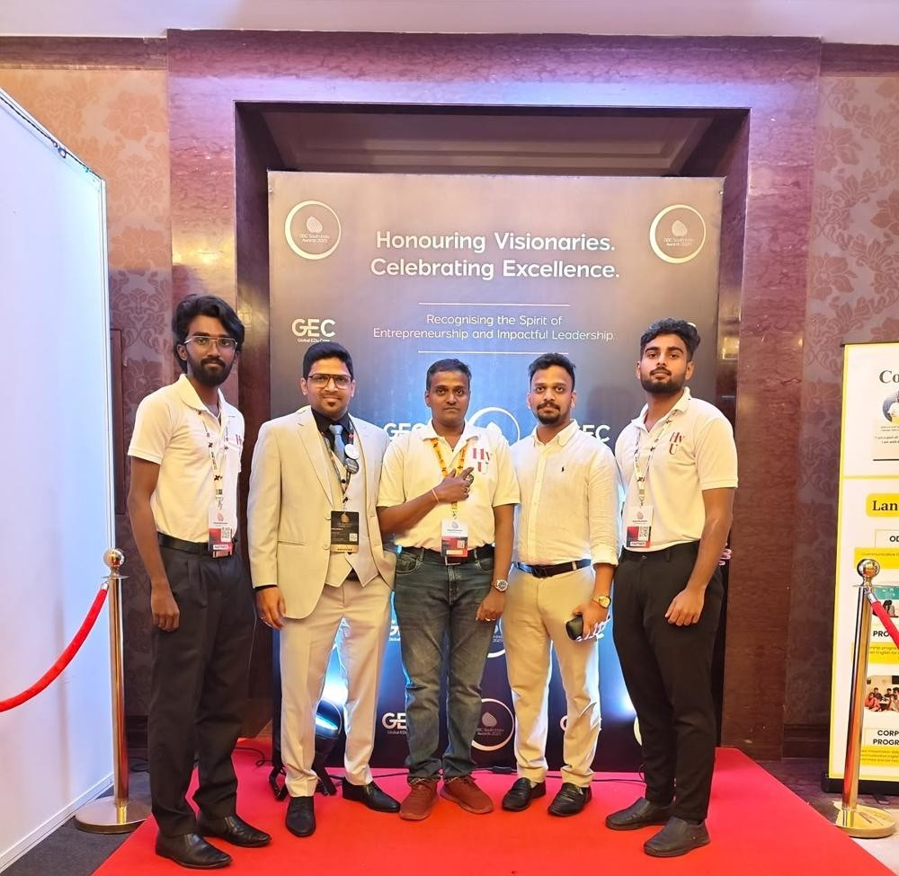
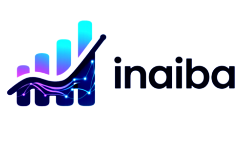

01 · Observe
Find the opportunity.
What problem are we truly trying to solve?
Look closely at people, businesses, and everyday experiences to uncover what can be improved or rethought entirely.
A journal of the ideas we explore, products we shape, people we meet, places that broaden our view, and moments that become part of the IDF journey.

At Iconic Dream Focus, technology starts long before a polished interface or a finished product. It begins with noticing what could work differently, shaping the idea through continuous cycles, and bringing it into reality.
Look closely at people, businesses, and everyday experiences to uncover what can be improved or rethought entirely.

Products and concepts advance through feedback, new technology, shifting contexts, and the people who rely on them.

Experiment, design, develop, and test until a conceptual insight becomes something people can actually experience.
Short editorial pieces about the people, observations and experiences that sit behind the visible work.
Events are often remembered through photographs. The more interesting part is what happened between them: an introduction, a question, an unexpected perspective, or a conversation that continued after everyone left the room.
A new technology is not automatically a useful one. The question is what it changes for the person using it.
The problem written in a requirement is not always the problem experienced by the person behind it.
Not every meeting produces an answer. Some meetings change the question, which can be just as valuable.
The quiet work of observations, prototypes, revisions and ideas before anything becomes a polished product.
A visual first look. Two short sentences. Then, if something catches your attention, open the editorial story behind it.
Food. Travel. Discovery. People. Hy U explores a connected way to discover experiences, communities and places through one growing ecosystem.

Heartificially Yours Working Angel explores a more natural relationship between people and AI through conversation, assistance and context.

Discover places worth experiencing. Explore a more meaningful way to discover restaurants, hotels and experiences based on the moment and the people behind it.

Turn business data into clearer decisions. INAIBA brings analytics, forecasting and business intelligence together to help businesses understand what their data is saying.

Stories made personal. Explores personalized storytelling and calming sleep-time experiences designed around children’s imagination and interests.

Making GST management simpler. Explore intelligent workflows for GST calculations, filing and tax-related processes, helping businesses reduce unnecessary complexity.

A vision for connected enterprise platforms that bring together digital experiences, automation, intelligent workflows and scalable technology.

From South India to Düsseldorf and Paris — a journey in conversations.
Business gatherings, international meetings and a wider technology community: how a series of places shaped the way IDF looks at its own work.
Large photographs first. A short introduction next. The longer experience opens only when the reader wants to go deeper.

A gathering of entrepreneurs, business leaders and innovators that became an important moment in IDF’s journey. The event also brought recognition to IDF through the Emerging Startup Award for South India.
A journey centred around business conversations, collaboration and pitching opportunities with ERGO. A new environment brought a different perspective on technology and international collaboration.
A delegation from Chennai, conversations with the Paris Region ecosystem, Station F and experiences around the wider technology community.

An opportunity to connect with the Paris Region team and exchange perspectives around technology, innovation and entrepreneurship.
A two-day business gathering that brought together people, recognition, the IDF–HY U vision and dashboard-related conversations.
A moment of recognition for Iconic Dream Focus at the Global Business Conclave. The recognition belongs here not as a badge, but as part of the story of an event, a room, a team and a moment that mattered.

A finished screen hides the decisions that came before it. The useful story is often in the versions that never shipped.
The requirement is rarely the whole problem. Building reveals what people actually need — and what needs to be rethought.
John Kiran appears here when a photograph or experience calls for him: an award moment, an international meeting, a business conversation, a city, a room.
Other people enter the journal for the same reason. Entrepreneurs, business leaders, colleagues and people encountered along the way become part of a particular story — not a list of titles.
The journal is interested in what people were talking about, what they noticed, what they were building and what happened next.
Short editorial notes from the work. Not predictions. Not marketing claims. Just questions and observations worth exploring.
A product becomes meaningful when it improves an experience, simplifies a process, strengthens a connection or makes an opportunity more accessible.
Businesses already have numbers. The harder work is understanding what changed, why it changed, what matters and what deserves attention.
There is another question: should AI do it, and can it do so in a way that is useful, understandable and grounded in context?
The first version does not need to answer every question. Sometimes it only needs to exist so the next question can be asked with better information.
A photograph captures the moment. The value often lives in the conversation that happened before it and the relationship that continues after it.
Users change. Businesses change. Technology changes. Sometimes the most important iteration is changing the idea itself.
A visual record of places, people, meetings and moments. Captions stay close to what is visible or confirmed.
Updates belong in the journal as notes — not as another corporate navigation system.
IDF’s recognition at the Global Business Conclave becomes part of the South India story.
Deepening technology exchanges and ecosystem connections in France.
Connecting business leaders, entrepreneurs and innovators across regions.
Expanding platforms across products, enterprise solutions and experiences.
There are more ideas to build, places to discover, people to meet and experiences waiting to become part of the journey. This is only one chapter of the IDF story.
Come back whenever you like — there is always another journey, another idea and another conversation worth writing down.